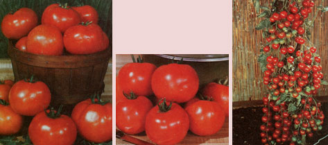

Here's more garden-tested suggestions from Brent Elswick...
Red, juicy, and burstin' with flavor, the tomato is-without a doubt-one of North America's favorite crops . . . both for in-thegarden reliability and on-the-table taste. However, the crowd-pleaser is available in so many forms that just choosing a prospective cropper can be a problem.
If, for instance, you rely on whatever alreadystarted plants your local garden center happens to offer (usually only a few of the bestknown types), you'll be lucky if you wind up with a variety that's even suited to your area. But when you turn to the catalogs to order seed, the sheer number of choices can be mystifying! I've spent the last four years testing just about all the varieties of tomatoes that are commonly available . . . and here are my recommendations for home gardens.
Tomatoes fall into several categories, differing in such qualities as habit of growth . . . fruit size . . . and the time required for the plant to produce a ripe harvest. The first distinction that the home gardener should understand is the difference between determinate and in determinate plants. Determinate tomatoes climb to a genetically decreed height and thenas the terminal bud blooms the plants stop growing. All of the blossoms on such a bush set fruit at about the same time, and the harvest is concentrated within a fairly short period . . . often no more than a week or two.
Of course, such a growth habit is fine if you want plenty of the tangy fruit ripe all at once (say, for canning), but if you'd like to have freshpicked sandwich and salad fixin's over a period of several months, you'd better plant some indeterminate (or staking) varieties, too. On such vines, the terminal bud doesn't flower . . . it just keeps on growin'. As the blossoms on the lower part of indeter minate plants set and begin to ripen fruit, new flowers farther up burst into bloom . . . so the crop is produced continually until frost kills the plant. A wellrounded garden should have a mixture of both determinate and indeterminate plants, to provide tomatoes for both canning and the table.
SMALL FRY
The popularity of container gardening has recently brought a lot of attention to smallfruited tomatoes, and plant geneticists have come up with some real winners. First among the little fellas that grow on compact determinate vines is Pixie Hybrid (Burpee, Thompson & Morgan, Stokes), which produces wonderfully flavored 1-3/4" fruits-on 14- to 18inch plants-in 52 days from transplanting.
Another compact winner is Park's Bitsy VF, which offers all of Pixie's fine qualities plus a resistance to troublesome wilt diseases . . . as indicated by the "V" (for verticillium wilt) and "F" (for fusarium wilt) attached to its name. (Actually, some tomatoes don't contract the diseases at all, because they're resistant to verticillium and fusarium. Other cultivars, however, are tolerant of the wilts . . . which means that even though the plant may contract the disease, its fruit crop will be largely unaffected. Unfortunately, many seed companies seem to have confused resistance and tolerance, and it's difficult to tell-from a catalog description-just how immune some varieties are. All VF tomatoes, however, are at least tolerant of the wilt diseases.) Some plants also sport an "N" after the name, indicating a resistance to infestation by nematodes . . . the small wirelike worms that attack the roots.
Other highly recommended cultivars include Patio (Park, Twilley, Hastings). which produces 2"-diameter fruit on two oot plants in 70 days . . . City Best VF (Park), an improved Patio . . . Small Fry VFN (Park, Burpee), with clusters of deliciously tangysweet fruit on threefoot vines in 65 days . . . Tiny Tire (Johnny's, Nichols, Jung), which yields little 3/4" fruits on a plant perfect for hanging baskets . . . and Droplet (Farmer), a variety known for holding its fruit on the vine when ripe.
However, not all small tomatoes are borne on determinate plants. Among the season-long indeterminates are Sweet 100 (Burpee, Harris, Thompson & Morgan), the extraordinarily heavybearing All-America medal winner that's widely admired for its flavor and high vitamin C content . . . and an English import, Gardener's Delight (Johnny's, Thompson & Morgan, Burpee). The transatlantic tomato has the real tangy flavor of the "love apples" of a century or more ago, according to the folks at Thompson & Morgan . . . and the bite-sized yummies can be frozen whole!
EARLY SLICERS
Turning now to "normal"-sized fruit (which can range from four ounces to well over a pound!), we'll first discuss the early varieties . . . which-since they mature within 45 to 65 days after the transplants are set out-are a real boon to the short-season gardener. Two determinate types lead off the list: Spring Giant VF (Twilley, Park, Stokes), which ripens finetasting eight-ounce fruit in about 65 days . . . and Ultra Girl VFN (Stokes), which yields a heavy crop of half-pound saladmakers in a short 56 days. The earliest variety, however, is undoubtedly Early Girl (Park, Burpee), whose five- to six-ounce fruits mature in just 45 to 50 days . . . but this cultivar does sacrifice some flavor to produce its quick crop.
Several indeterminate types that bear early and then keep on producing fruit are Big Early (Burpee), 62 days . . . Extra Early (Park), 65 days . . . and Rushmore VF (Stokes, Gurney), a 66-day type that's ideal for the West and Midwest areas of the United States.
However, a new introduction called Early Cascade VF (Nichols, Park, Burpee, Stokes) has the potential to become the leading early tomato. The plant's delicious fruits are small (four ounces), but are produced in great profusion and over a long season.
MAIN CROPPERS
The list of mid-season (maturing within 70 to 80 days after they're set out) determinate varieties has to be headed by Floramerica VF (carried by most major seed houses), the great 1978 All-America Bronze Medal winner. This widely adapted plant (it will bear in cool, hot, or humid weather) yields fruit weighing up to 12 ounces . . . and it's tolerant of-or resistant tosome 16 tomato diseases! Herbst is offering another strong performer: The Godfather VFN, which produces eight-ounce globes that are resistant to several diseases and to blossomend rot. Other quality mid-season determinates are Big Set VFN (Gurney, Twilley), which sets halfpound fruit well even in cold weather . . . and Bonus V FN (Park, Twilley, Hastings), which produces a heavy crop in 75 days.
The mid-season indeterminates are the "main croppers"-the tomatoes folks rely on year after year-and the yardstick by which all others are measured is Better Boy VFN (Stokes, Twilley, Park, Burpee). Better Boy really is an improvement over earlier hybrids: Not only is it one of the most disease-free tomatoes ever bred, but it's also considered one of the finest-tasting fruits available. This 70-day variety has been reported to yield as many as 280 1-1/2-pound fruits from one vine! Make a place for it.
However, even if you choose a superb performer such as Better Boy, it's best not to put all your tomatoes in one basket. You can achieve diversity by planting some of the other fine mid-season varieties as well: such as Big Girl VF (Burpee), a disease-spurning relative of Big Boy that produces one-pound fruit in 78 days . . . Whopper VFNT (Park), featuring a resistance to tobacco mosaic (smokers, take note!) and luscious 10ounce globes in 75 days . . . Red Chief VFN (Hastings), an excellent southern variety with nine-ounce fruit in 80 days . . . Terrific VFN (Herbst, Park, Hastings), a rugged hybrid with good crack resistance and 10-ounce fruit in 70 days . . . He Man VF (Park), a robust plant with six-ounce tomatoes in 80 days . . . Fantastic VF (Gurney, Park, Stokes), which yields tangy eight-ouncers in 70 days ... Ultra Boy VFN (Stokes), which-although it has one-pound fruits that ripen in 72 days-doesn't match its sister, Ultra Girl, in flavor . . . and Nepal (Farmer), a large variety for the North.
THE BEEFSTEAK BROTHERS
The heavyweights form a class of their own. The huge fruits of these late-ripening (75-90 days) indeterminate plants are enormously popular for slicing. For years Beefsteak set the standard for such tomatoes, but this variety is subject to disease. Look for Beefmaster VFN, an improved Beefsteak variant (from Herbst, Park, and Burpee), which bears heavy crops of fruit weighing up to two pounds and has a flavor that challenges that of Better Boy. Other giants that have performed well for me include Bragger (Park), rough-fruited but vigorous and crackresistant . . . The Duke VF (Park), a highly productive vine which yields fruit weighing up to two pounds in 75 days . . . Wonder Boy VF (Herbst, Stokes, Twilley), which produces onepound love apples-of excellent flavorin 80 days . . . Supersonic VF (Harris), which ripens superb half-pound fruit in 79 days . . . and Pink-Skinned Jumbo (Park), an improvement over the old Ponderosa variety.
PLAYING KETCHUP
If the space allotted to tomatoes in your garden isn't already crammed to bursting, you should consider planting some of the plum-shaped paste types. Their fruits make superb ketchup as well as fine tomato paste, and they're great canners, too. Look for Roma VF, a 76-day determinate variety from Park, Stokes, and Burpee . . . San Marzano (Burpee, Stokes), an 80-day indeterminate with a high percentage of solids . . . Veepick VF (Stokes), an easy-peeling type with 73-day maturity . . . and No va (Stokes), an early (65 days) Roma variant.
Of course, you might also want to try a few of the yellow varieties that are popular in many parts of the country. It has often been claimed that yellow tomatoes -because of their mild flavor-are low in acidity . . . but the USDA has found that the blander flavor comes from increased sugar content, not less acid. Among the popular yellow tomatoes are Sunray F (Burpee, Harris, Twilley), an 80-day indeterminate vine . . . Jubilee (Nichols, Park, Burpee), an 80-day indeterminate that's the oldtimer among the yellow fruit .. . and Golden Delight (Gurney, Stokes), a 65-day determinate plant. You can even purchase white tomatoes, but they lack both disease resistance and fine flavor and are generally considered only novelties.
Well, there you have it. I've listed a farm full of reliable performers, andamong them-several certified all-time winners. Put it this way . . . any garden that contains some of the following can't go wrong: Sweet 100, Ultra Girl, Better Boy, Floramerica, and Beefmaster. And now that you've got some ideas on what to grow, take a look at the accompanying sidebar and find out how to grow 'em. Good gardening!
SEED SOURCES FOR TOMATOES
Burpee Seed Co.
Dept. TMEN
Warminster, Pennsylvania 18991
Clinton, Iowa 52732
Riverside, California 92502
Farmer Seed & Nursery
Dept. TMEN
818 Northwest 4th Street
Faribault, Minnesota 55021
Gurney Seed & Nursery
Dept. TMEN
Yankton, South Dakota 57079
Joseph Harris & Co.
Dept. TMEN
Moreton Farm
Rochester, New York 14624
H.G. Hastings & Co.
Dept. TMEN
P.O. Box 4274
Atlanta, Georgia 30302
Herbst Brothers Seedsmen
Dept. TMEN
1000 North Main Street
Brewster, New York 10509
Johnny's Selected Seeds
Dept. TMEN
Albion, Maine 04910
J.W. Jung Seed Co.
Dept. TMEN
339 South High Street
Randolph, Wisconsin 53956
Nichols Garden Nursery
Dept. TMEN
1190 North Pacific Highway
Albany, Oregon 97321
George W. Park Seed Co.
Dept. TMEN
Box 31
Greenwood, South Carolina 29647
Stokes Seeds
Dept. TMEN
Box 548
Buffalo, New York 14240
Thompson & Morgan
Dept. TMEN
Box 100
Farmingdale, New Jersey 07727
Otis S. Twilley Seed Co.
Dept. TMEN
P.O. Box 65
Trevose, Pennsylvania 19047
GROW 'EM FROM SEED! If you want to try many of the tomatoes described in the accompanying article, you're going to have to raise 'em from seed . . . since most of the varieties mentioned just aren't often available as alreadystarted plants. Don't be frightened off, though ... you'll find that it's easy-as well as inexpensive-to raise your own "starts"! Here's how:
First, get out your calendar and mark the occurrence of the last frost in your area (you can get the information from your county agricultural agent) . . . then count back six to eight weeks. The date you come up with is when you should plan to start your tomatoes-to-be.
To germinate the seeds, you'll need some soilless mix (sold under such names as Jiffy Mix, Pro-Mix, Metro Mix, or Terra-Lite Tomato Soil . . . and available through seed catalogs and garden centers), some seed flats to hold the mix, plastic bags for "instant greenhouses" to enclose the flats in, milled sphagnum moss (not peat moss), and a source of mild-75 to 80°F is idealheat: Use an electric heating pad, tray, or cable . .. or a well-insulated radiator or heat pipe,
Now fill the fiats with the soilless mix and dampen 'em well . . . sow the seeds on top (spaced an inch apart) and cover them with a half-inch layer of milled sphagnum . . . wet the moss thoroughly . . . put each flat in a plastic bag. . . close the sacks with twist-ties ... and place the "incubators" on the heat source. The sphagnum moss will prevent dampingoff disease, the plastic bags will retain the moisture so you won't have to water until the little plants are up, and the heat will really speed up germination. In fact, you can expect the seedlings to become visible in about a week.
Once the young'uns are up, brace the plastic covering so the plants don't touch the damp material (the bag can be discarded when the seedlings are about a week old), remove the flat from the heat source, and grow the sprouts-at about 60°F-an inch or two under a twin-tube 40watt fluorescent light fixture. (The lamplight "day" should be between 14 and 16 hours long.) Raise the little plants under these conditions until they're two to three inches tall and have at least one set of true leaves (not just the cotyledons that are the first to appear). At that point, you'll be ready to perform the first transplanting.
Gather together some three-inch flowerpots (plastic cups will also work fine), fill them with the soilless mix, andcarefullylift the seedlings from their trays and place them In their new homes. In transferring them, set the immature plants deeper than they were growing in the flat. . . even if you have to nip off the lower leaves. Tomatoes have the ability to sprout roots all along their buried stems, so deep planting will help produce substantial root systems. Feed the seedlings each time you water by giving them a quarter-strength dose of soluble houseplant fertilizer, and continue growing the young vines under the lights until they are about 10 inches tall.
Now it's time for the second trans planting ... this time into half-gallon milk cartons (or similar-sized containers). Again set the plants deep: Remove all the lower leaves, and-with the roots touching the bottom of the carton-bury the denuded stem almost up to the top.
Of course, the entire purpose of double transplanting is to produce stocky plants with substantial root systems, not to rush fruiting. So, if the vines do develop flowers or fruit before it's time to set them out, it's best (although the act can break your heart) to pinch off the precocious buds. As the folks at Johnny's Selected Seeds point out in their 1980 catalog, if such surgery isn't done, the plants may remain stunted and produce only a few small, poor-quality fruits when they're placed in the garden.
After the last frost, begin to harden off the plants. Omit a watering or two, and then place the seedlings (still in their containers) in a sheltered, semishaded place in the garden for three or four days . . . bringing the plants in at night. Then, for the toliowing week or so, allow the plants to remain in a sheltered spot in the garden overnight. While the young vines are hardening off, you'll have time to prepare the bed (if you didn't do so the previous fall). Take a soil test, and adjust for a pH of 6 to 6.9 . . . adding lime if the soil is too acidic (the calcium will help prevent blossom-end rot, too) and sulfur if it's too alkaline.
Tomatoes are particularly fond of organic matter, so try to incorporate large amounts of compost or well-rotted (not fresh) manure as you work the plot to a depth of ten inches. If your soil test indicated a need for fertilizer, remember that a low nitrogen -mix is best: Look for a 510-10 blend.
Then, if you live in a region with a balmy spring and a scorching summer, place the transplants in compost-lined holes deep enough to cover each vine almost to its top set of leaves. Nip off the lower fronds, wrap a three-inch strip of newspaper around the stem as a cutworm collar (half above the soil line and half below), set the plant in the hole, fill and firm the soil, and water it well. The deep root run will be shielded from summer's heat and. dryness, and belowground moisture will always be available to the plant.
If, on the other hand, you live in a colder area, try the trench planting method advocated by Dick Raymond in his Down-loEarth Vegetable Gardening Know-How (Garden Way, 1975 . . . available for $5.95 from most bookstores orfor the listed price plus 95d shipping and handling-from Mother's Bookshelf, P.O. Box 70, Hendersonville, North Carolina 28739). Dick suggests digging a three-inch-deep trench, placing a halfinch layer of compost or aged manure in the bottom, and then laying the transplant (after pinching off all but the topmost cluster of leaves) on its side in the groove. Cover the stem with soil, propping up the tomato's top with a little pillow of earth, and water it well. Mother Nature will soon have the plant growing straight and tall; while the roots that form along the stem will be basking in the sun's warmth under their shallow earthen blanket.
No matter which system of planting you choose, you'll still have to decide how-and if-you want to support your plants. If you're raising determinate tomatoes, there's little problem. The sturdy but compact growers hold their own heads up high, and little or no help is necessary (although sometimes a minimal two-foot cage is useful). Indeter minate plants can become huge, though, and-unless you're willing to let the big vines sprawl (with the attendant waste of space and rotting fruit)you'll probably choose either staking or cages as a method of support.
Staking starts easily but requires additional work later. Use an eight-foot 2 X 2 for the prop, and drive it in next to the plant-downwind from the prevailing breezeat transplanting time. That's the easy part . . . now comes the work: pruning and tying up. The main stem must be tied to the pole. Use soft cloth or twine, or plastic tape . . . and tie the stalk loosely, of course, to avoid girdling (and killing) the plant. (One excellent scrounged tying material is old nylon stocking or pantyhose fabric . . . !t has enough give to avoid choking the vine.) Then, as suckers-or new branches-develop where the old limbs meet the stem, the new growth must be pinched out. Let a cou ple of leaves develop on the sucker, and then prune above the leaves . . . to better protect the fruit from the sun.
Caging the plants, on the other hand, requires more work up front . .. but virtually no maintenance later. The real labor is in making the cages, for which you should use 'large-meshed (five-inch or greater) concrete-reinforcing or hog wire. The ideal cage size seems to be two feet in diameter and five feet tall, so you'll need to cut a 8'4" length of five-foot fencing to work with. Form the wire into a cylinder and crimp the ends to each other to ensure stability.
You can anchor the cage to the ground by using wooden stakes or wire attached to the bottom of the support . . . or you 5 can remove the bottom layer of crosspieces and push the vertical prongs into the earth. That's it! The plant will be contained and supported by the cage without any pruning (or other action) on your part. Now all you have to do is to keep the vines fed and watered and the bugs picked off . . . and to harvest-in the fullness of time-a bumper crop of succulent red tomatoes.
EDITOR'S NOTE: Ortho Publications has produced a beautifully illustrated and wellwritten (if you ignore the pesticide bias) book entitled All About Tomatoes, which will answer just about any question you might have concerning the fruit. It's available from bookstores or-ior $3.95 plus 95d shipping and handling-from Mother's Bookshelf, P.O. Box 70, Hendersonville, North Carolina 28739. It's highly recommended!
|
 Succulent red tomatoes are by far America's favorite garden crop... they're grown in over 90% of all vegetable gardens. Varieties such as Burpee's Big Early (left) ... the disease-resistant Flor-america VF (below) ... and the bountiful Sweet 100 (right) can be the hit of your vegetable plot! |
|
|